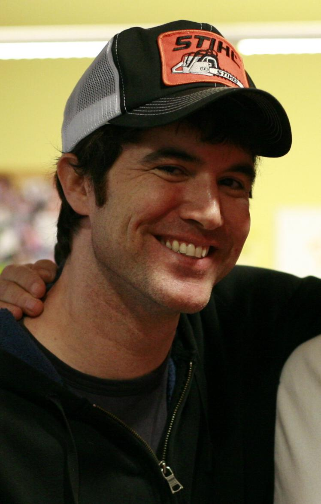
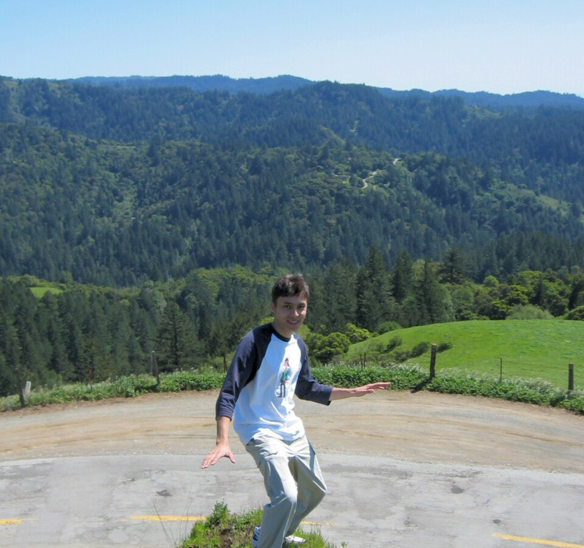
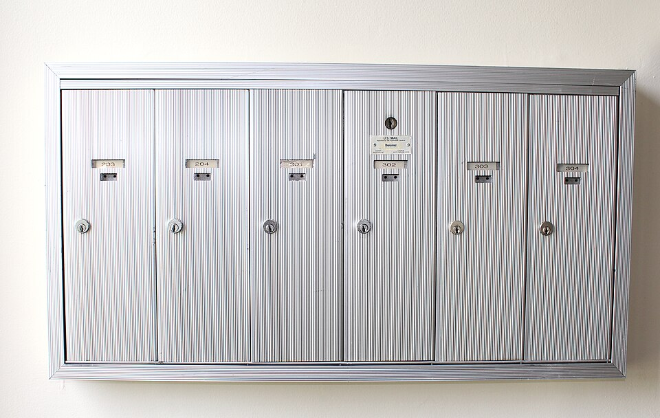

As redes sociais
De 2002 a 2012, em ordem e com as pessoas. A busca do episódio anterior só responde a quem pergunta. Aqui a rede passa a mostrar o que os outros andaram fazendo, e a partir de um certo tamanho isso deixa de ser ideia de produto e vira problema de computação. São dois problemas, não um: montar o que cada pessoa vê custa caro, e ninguém consegue ler tudo. Quando o áudio pedir, aperte Próximo.
A caixa de correio do prédio. Há dois jeitos de entregar o jornal. Ou o porteiro sobe e põe uma cópia na caixa de cada morador, dando trabalho na hora de publicar. Ou não entrega nada e monta a pilha quando o morador desce, dando trabalho toda vez que alguém lê. Como as pessoas descem muito mais do que sai jornal, compensa o porteiro subir. Até um jornal ter trinta milhões de assinantes.
O Friendster
3 milhões de pessoas no fim de 2003, entrando a 9.500 por dia. Naquele ano o Google ofereceu 30 milhões de dólares e eles recusaram. Guardar ligação entre pessoas era um tipo de coisa que ninguém tinha feito nessa escala.
Por que ficou lento
A parte melhor documentada quase nunca é contada: boa parte do problema era a própria fundação do sistema, trocada inteira só em junho de 2004. Não foi ideia errada; foi conta cara demais pra hora.
O MySpace ganha por fazer menos conta
Dizem que o MySpace afundou por ter trocado a base técnica. A conta não fecha: a troca foi em 2005, melhorou o desempenho, e o site cresceu mais três anos. A peça mais bonita do Friendster era a que a máquina não aguentava, e quem cortou a peça ganhou.

O Facebook cresce por pedaço
Crescer devagar de propósito foi o que deixou a máquina acompanhar. O Friendster abriu pro mundo e quebrou; este abriu por pedaço.

O cano da bolha finalmente enche
O vídeo é o primeiro uso grande que encheu a fibra enterrada na bolha e apagada desde 2000. Em outubro de 2006 o Google compra o YouTube por 1 bilhão e 650 milhões.

O Twitter, e a baleia
Ficou famoso culpar a linguagem de programação, e o arquiteto-chefe deles diz que não: isso daria uns 10 por cento. O problema era o banco de dados.
Montar o que cada um vê
Publicar eram 4.600 mensagens por segundo; ler a própria tela, 300 mil. Cada mensagem chega a 75 seguidores em média, então publicar vira 345 mil escritas por segundo. E compensa, porque a leitura é 75 vezes maior.
O mural de novidades
No mesmo dia o texto foi "calma, respira, a gente ouviu vocês", e não mudou nada. Três dias depois veio outro, começando com "a gente errou feio nessa". E o que quase todo mundo erra: esse mural nunca mostrou tudo, só que o ajuste era feito na mão.
As peças que nasceram do aperto
A ironia: em 2010 o Facebook escolheu onde guardar as mensagens e não escolheu o Cassandra. Quando o software cresce mais rápido que as ferramentas, ele passa a fabricar ferramenta.
Quando ninguém consegue ler tudo

Numa medida do próprio Facebook, de 2013, cada vez que alguém abria o mural havia em média 1.500 coisas e o sistema mostrava umas 300. Em 2010 eles explicaram como escolhiam: afinidade, peso da ação e tempo, multiplicados.
2012
Em 2010 quem escolhia era uma regra de três fatores, escrita por pessoas, que cabia num slide. Mas e se ninguém escrever a regra? E se a máquina descobrir sozinha, olhando o que você fez antes?